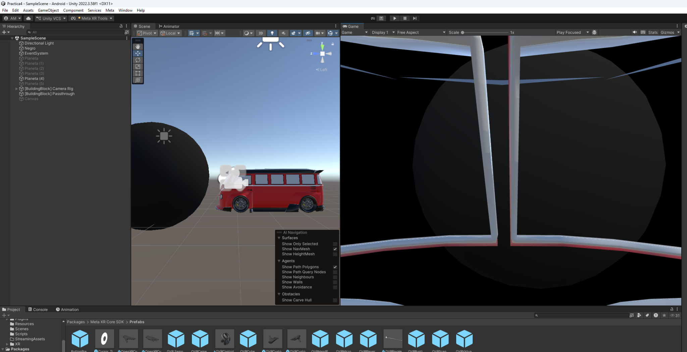
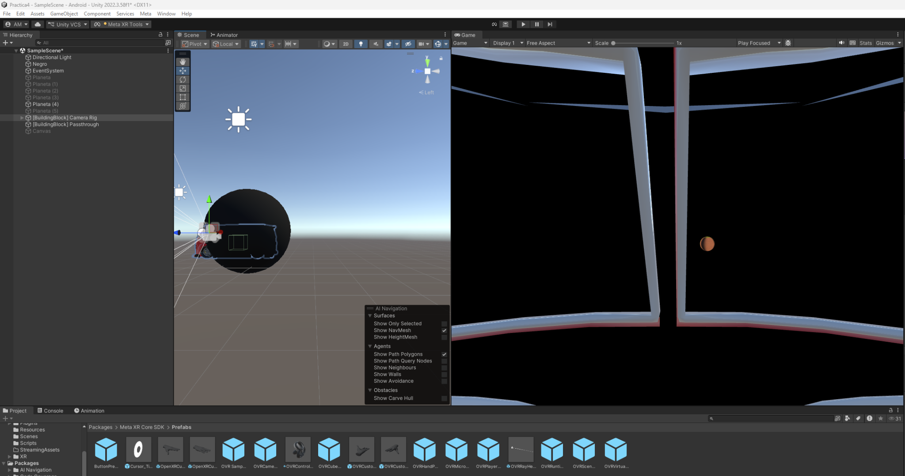
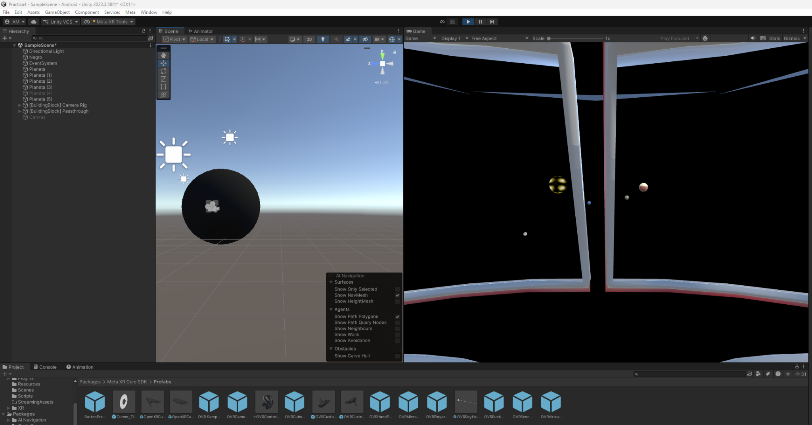

Objetivo
Comprender cómo detectar la interacción entre objetos en Unity y utilizarla para ejecutar una acción dentro de una escena de realidad virtual, relacionando el movimiento de un vehículo con la aparición de varios planetas.
PRÁCTICA 04 · REALIDAD VIRTUAL
En esta práctica trabajamos con la interacción entre objetos en Unity para activar eventos dentro de un entorno virtual. La actividad consistía en crear una nave que, al acercarse a un agujero negro, hiciera aparecer planetas y asteroides. Nosotros decidimos adaptar la idea utilizando una combi roja como vehículo y probamos la experiencia con lentes de realidad virtual.
Comprender cómo detectar la interacción entre objetos en Unity y utilizarla para ejecutar una acción dentro de una escena de realidad virtual, relacionando el movimiento de un vehículo con la aparición de varios planetas.
Primero descargamos de internet un modelo 3D de una combi roja y lo incorporamos a nuestra escena de Unity. Aunque las instrucciones proponían una nave espacial, elegimos este vehículo para darle un toque diferente a la experiencia. También colocamos un objeto oscuro que representaba el agujero negro y agregamos los planetas que aparecerían después.
Para movernos en realidad virtual, hicimos que la combi fuera un objeto hijo de la cámara, de manera que siguiera su movimiento. Después ajustamos la posición de la cámara al interior del vehículo para observar el entorno a través de sus ventanas, como si estuviéramos viajando dentro de él.
Finalmente, trabajamos con la detección de contacto para que el agujero negro funcionara como punto de activación. Al acercarnos con el vehículo y entrar en la zona configurada, todos los planetas aparecían al mismo tiempo. Realizamos pruebas en Unity y posteriormente con los lentes de realidad virtual para revisar que la experiencia funcionara como esperábamos.
En la vista de escena podemos observar la combi roja que importamos a Unity y el objeto que utilizamos como agujero negro. También se muestra la perspectiva de la cámara desde el vehículo.

Probamos el acercamiento al agujero negro desde la perspectiva de la cámara ubicada dentro de la combi. En esta captura ya se alcanza a observar un planeta desde el vehículo.

Una vez activada la zona de detección, los planetas aparecieron juntos dentro de la experiencia. Con esta prueba comprobamos la acción que queríamos conseguir mediante la interacción con el agujero negro.

Esta práctica nos permitió entender mejor cómo una interacción entre objetos puede activar cambios dentro de una escena de Unity. Además, aprendimos a ajustar la cámara para que el vehículo nos acompañara al movernos con los lentes, haciendo que la experiencia se sintiera más inmersiva. Al final logramos que, al acercarnos al agujero negro, aparecieran todos los planetas al mismo tiempo, tal como buscábamos.